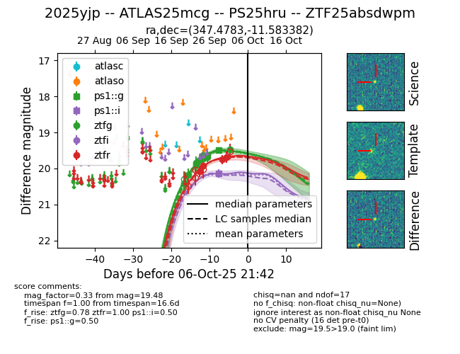

FINK: ZTF25absdwpm
Lasair: ZTF25absdwpm
ALeRCE: ZTF25absdwpm
TNS: 2025yjp
YSE: 2025yjp
ZTF25absdwpm (ztf,fink)
2025yjp (tns,yse)
ATLAS25mcg (atlas)
PS25hru (panstarrs)
equatorial (ra, dec) = (347.4783,-11.58338)
galactic (l, b) = (61.1025,-61.55386)

last ps1::g=19.49, ps1::i=20.14, ztfg=19.48, ztfr=19.69
1 ps1::g, 1 ps1::i, 10 ztfg, 4 ztfr detections